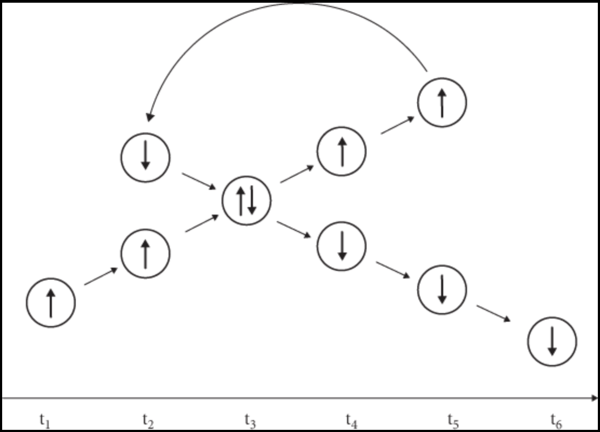
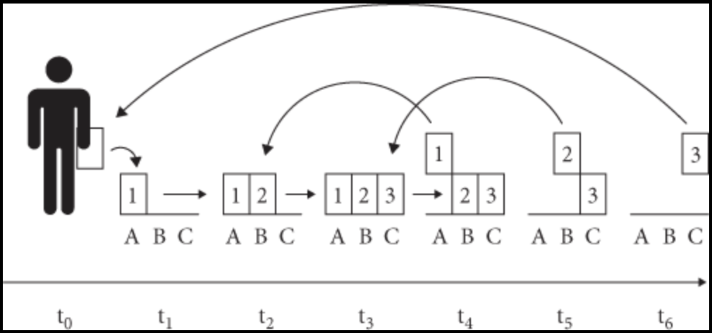

13 Identity and Time Travel
Time travel scenarios put pressure on views of persistence, since they give rise to more intractable variations on the puzzles we have discussed. We will use self-visitation cases to stress-test two accounts of persistence: perdurance and endurance.
Consider Tim, the time traveler who is born in 1980 and decides to step into the time machine once he turns fifty. Tim turns the dial and finally emerges in his college room in the year 2000. We may even imagine that the fifty-year old Tim finds a way to talk to twenty-year old Tim.
Here is the problem:
Self-visitation involves numerical identity.
Fifty-year old Tim is numerically identical to twenty-year old Tim. They are one and the same person.
Self-visitation involves qualitative change.
Fifty-year old Tim is wholly gray-haired, but twenty-year old Tim is wholly brown-haired.
The qualitative change in question involves incompatible qualities.
Nothing is wholly gray-haired and wholly brown-haired.
By Leibniz’s Law, if fifty-year old Tim is numerically identical to twenty-year old Tim, then one exemplifies a quality if, and only if, the other does.
The problem is that we are now entitled to conclude:
- Fifty-year old Tim is not numerically identical to twenty-year old Tim.
So, we have a contradiction.
The problem raised by self-visitation is now parallel to the problem of change:
This is a strengthened form of the problem of change: Tim himself appears to exemplify incompatible qualities at one and the same time.
13.1 Time Travel and Perdurance
How would the perdurantist approach the problem above?
13.1.1 The Problem of Identity
One option is to understand the terms ‘fifty-year old Tim’ and ‘twenty-year old Tim’ to denote distinct temporal parts of a four-dimensional object in which case we could deny the first premise of the puzzle.
One temporal part of Tim is wholly gray-haired whereas the other is wholly brown-haired, but there is no problem since they are numerically distinct objects. But there is a potential conflict with the initial definition of temporal part:
\(x\) is a temporal part of \(y\) at \(t\) if, and only if:
\(t\) is the time span of \(x\).
\(x\) is part of \(y\) at \(t\).
\(x\) overlaps at \(t\) every part of \(y\) at \(t\).
One consequence of the definition is that there is at most one temporal part of Tim at each time at which he visits himself. At one such time \(t\), Tim has a temporal part with a scattered three-dimensional profile. Furthermore, Tim appears to have two person-like spatial parts at \(t\). We can certainly make a distinction between them but notice that we are not entitled to call them temporal parts of Tim.
13.1.2 Change Revisited
One alternative opens up for proponents of perdurance:
For each quality \(F\), Tim is \(F\) at \(t\) if, and only if, there is some region \(R\) such that Tim has a person-like part located at \(R\) that is \(F\).
On this view, qualities such as being wholly gray-haired and being wholly brown-haired are no longer viewed as incompatible:
Tim is wholly gray-haired at \(t\), because Tim has a person-like part located at a region \(R\) that is wholly gray-haired.
Tim is wholly brown-haired at \(t\), because Tim has a person-like part located at a region \(S\) that is wholly brown-haired.
The question remains: what exactly are person-like parts of Tim? Keep in mind that parallel problems arise for elementary particles and other sorts of objects.
13.2 Time Travel and Endurance
We landed on a view of endurance on which it is to be contrasted to temporal extension.
To endure is to be present at more than one time within a time interval in a mode for which the partial/entire distinction does not make sense.
It is now not open to endurantists to use ‘fifty-year old Tim’ and ‘twenty-year old Tim’ as labels for two distinct person-like parts of Tim. Tim exists at \(t\), and it occupies two distinct regions \(R\) and \(S\). What they can do is to distinguish the regions in virtue of the qualities Tim exemplifies at them. For example, Tim is wholly gray-haired at \(R\) but wholly brown-haired at \(S\).
13.2.1 Relational Change
Endurance suggests a different account of exemplification.
For each quality \(F\), Tim is \(F\) at \(t\) if, and only if, there is some region \(R\) such that Tim is \(F\) at \(t\) at \(R\).
On this view, qualities such as being wholly gray-haired and being wholly brown-haired are not viewed as relations to times but rather as relations to times and regions of space:
Tim is wholly gray-haired at \(t\), because Tim is wholly gray-haired at \(t\) in \(R\).
Tim is wholly brown-haired at \(t\), because Tim is wholly brown-haired at \(t\) in \(S\).
The qualities are still incompatible in that nothing can exemplify them at the same time in the same place. Or can they?
13.2.2 The Possibility of Co-Location
Some models of physics appear to allow for some particles, e.g., bosons with the same energy, to be in the same place at exactly the same time. Whether or not this physically possible is the case remains controversial, but we may at least consider the case to be metaphysically possible. But if co-location is metaphysically possible, we face a problem.
Consider the case of self-visitation (Wasserman 2017) illustrates with the following diagram:

A particle \(p\) begins to move in a northeastern path at \(t_1\), and it is sent back in time at \(t_5\). The particle arrives at \(t_2\) above its earlier self, and it begins to move to the southeast. At \(t_3\), the particle passes through its earlier self as it continues its southern descent.
The problem is that \(p\) could in principle have two different velocities as it passes through the region at which it is co-located with its earlier self, call it \(r\). But then:
\(p\) moves north at a velocity of 15km/h at \(t_3\) in \(r\).
\(p\) moves south at a velocity of 20km/h at \(t_3\) in \(r\).
But that would require the two velocities to be compatible after all. One way out may be to appeal to personal time and to say that the particle has different velocities at different personal times, even if they have them at the same external time and the same place.
13.3 Multi-Visitation and Mereology
Time travel appears to open the way for scenarios in which one and the same object lies next to earlier or later selves. Consider the curious case of the brick (Wasserman 2017) describes. Here the illustration he uses:

You have an unmarked brick with you at \(t_0\) as well as the ability to travel back and forth in time. Here is what you do:
- At time \(t_1\), you mark with a ‘1’ and lay it down at region \(A\).
- You then travel to \(t_4\), where you find an arrangement of three bricks marked ‘1’, ‘2’, and ‘3’. You remove the brick named ‘1’, re-label it ‘2’, and take it back to spot ‘B’ in \(t_2\).
- You then travel to \(t_5\), where you find two blocks marked ‘2’ and ‘3’ in spots ‘B’ and ‘C’. You remove the brick labeled ‘2’, re-label it ‘3’, and take it back to \(t_3\), where you place it in the spot C.
- Finally, you travel to \(t_6\), where a single brick labeled ‘3’ remains at \(C\). You remove the mark and take it back to \(t_0\).
Let us focus on the arrangement of bricks we find at \(t_3\):
- Are there three blocks or just one?
- How is the mini-wall located in A + B + C related to the original brick?
13.3.1 Multi-Visitation and Perdurance
There is, for perdurantists, a single four-dimensional brick, which is composed of several brick-like temporal parts.
At \(t_3\), there are three brick-like temporal parts of the brick, which are laid one next to the other.
The mini-wall located in A + B + C is a fusion of three brick-like temporal parts. Given the standard definition of temporal part, at \(t_3\), this is just the temporal part of the original brick. So, the temporal part of the brick is itself composed of three brick-like temporal parts laid next to each other.
13.3.2 Multi-Visitation and Endurance
Matters are more difficult from the standpoint of endurantism, and we may distinguish different options:
13.3.2.1 Identification
One option is to describe the case as one in which a single brick is located both at A and A + B + C:
At \(t_3\), there is only one brick, which is exactly located at each of A, B, and C.
The mini-wall located in A + B + C is one and the same brick as the one located at each of A, B, and C.
How much does the brick weight at \(t_3\)? If we place the material object we find in A +B + C on a scale, it would presumably weigh three times what the brick weighs. Bur where does the gain come from? On the face of it, the mini-wall should weigh three times what the brick weighs, and the fact that they have different weights seems to be a reason to distinguish them.
13.3.2.2 Composition
One more option is to claim that at \(t_3\), the past and future selves of the brick compose an object located at A + B + C:
At \(t_3\), there is one brick, which is exactly located at each of A, B, and C.
The mini-wall located in A +B + C is a fusion, which has the brick as a proper part. And similarly for the objects located at A + B, B + C, and A + C. They are all fusions with the brick as a proper part at least twice over.
The view, however, conflicts with a central principle of mereology according to which an object is a proper part of another only if there is some part of the latter that does not overlap the former. That, however, appears not to be true in the case at hand. The brick is a proper part of the mini-wall, but the brick overlaps every part of the mini-wall.
13.3.2.3 Constitution
One more option is to view the case through the lense of material constitution:
At \(t_3\), there is one brick, which is exactly located at each of A, B, and C.
The material object located in A +B + C is constituted by the brick, but it is different from it since they differ both in their temporal and modal properties.
The mini-wall did not, for example, exist at \(t_1\) even though the brick existed at \(t_1\). Nor could the mini-wall survive rearrangement in a way in which the brick would. Furthermore, much like in the case of the statue and the clay,
the brick and the mini-wall are both located at A + B + C.
the brick and the mini-wall are made of the same matter.